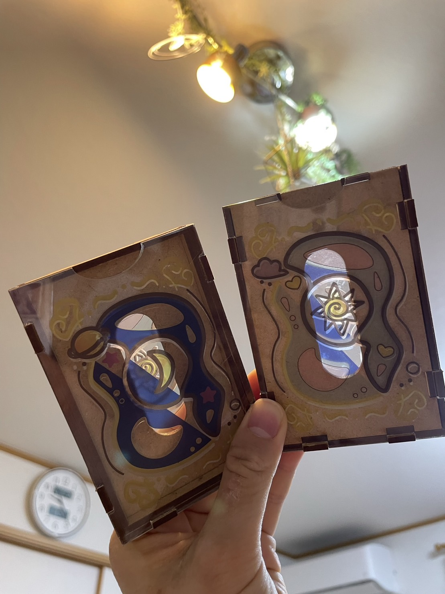

第11回｜鎌倉プロジェクト 活動④
実際にカットしている動画

カットして、UVプリンターで色をつけた結果…イメージ通りのデザインが完成できた。
実際にICカードが反応した😁
この２つのデザインを組み合わせる方向へ
問題点：全てアクリルにした結果、周りのパーツが細すぎて組み立てる時に割れてしまった😢
とりあえずMDFで代用したところ、より魅力的なデザインになった？と感じた。
しかし
⇒落としたらパーツがバラバラに、、、
⇒道用先生からも「分厚すぎ、、」と。
確かに厚さ問題に対応できていない。と気づく🔦
そこで他にも同じようなICケースづくりを行っている「かわせみさん」のアイディアを参考にさせていただくことに！
＊解決策＊
・キーケースのような３つ折り式のICケースに変更。
・なるべくデザインはこのままでやりたい。
・素材に布や皮を活用してコンパクトに。
・カードは２枚入れられるようにすることは前提。
→それに加えて、小銭やお札が入るようなケースがいいのでは？という方向に。